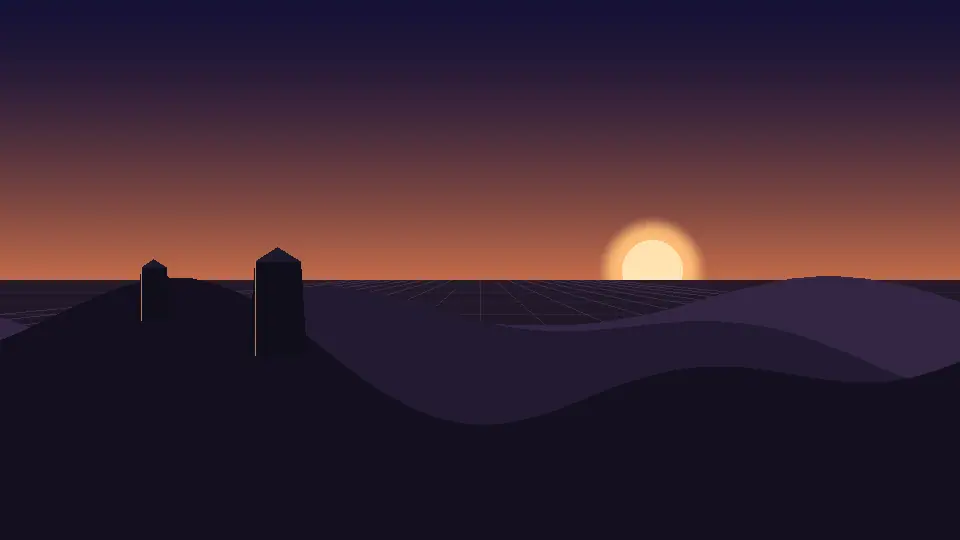
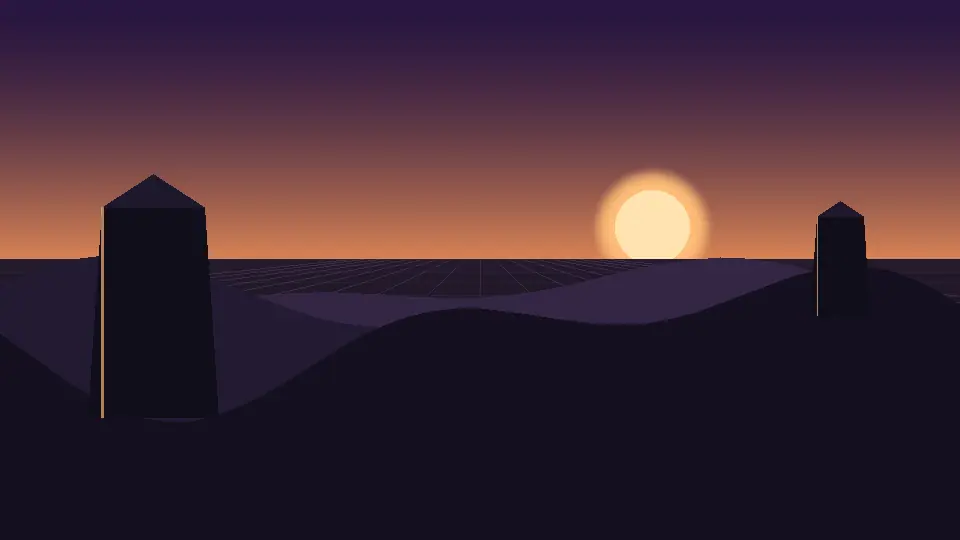
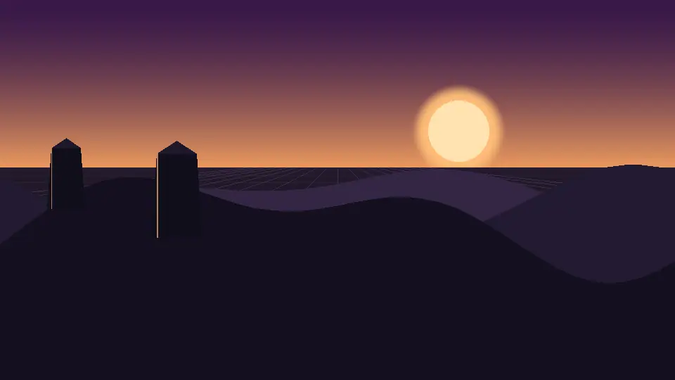

Start, middle and end of fourteen of the sixteen techniques, side by side and static. Use this
to choose a technique and to see what its range values actually do. index.html next
door launches each one live, but a live technique only ever shows one moment of itself.
smooth-scroll and view-transition are the two
that are not here, and the last row says why.
scrubbed · view()
Scroll reveal
Finish early. The default cover range is still animating at mid-screen, which reads as sluggish.
entry 10% — start
~cover 24% — mid
cover 38% — end
animation: reveal auto linear both;
animation-timeline: view();
animation-range: entry 10% cover 38%;
/* opacity 0→1, translateY 28px→0 */
scrubbed · scroll()
Scroll progress
Scale, never width. Survives prefers-reduced-motion — it reports position, which WCAG exempts.
0%
50%
100%
html{ scroll-timeline: --page block }
#progress{
transform-origin: 0 50%;
animation: grow auto linear;
animation-timeline: --page;
}
/* name it on html — anonymous scroll()
can resolve to an inactive timeline
on a position:fixed element */
scrubbed · view()
Parallax
WCAG 2.3.3 names this by name. Overscan the layers or their edges slide into view.
Use the contain range — cover starts while the section is still sliding in, so the first third plays off-screen.
contain 0%
contain 50%
contain 100%
.wrap { height:260vh;
view-timeline-name:--pin }
.stage{ position:sticky; top:0;
height:100vh }
.box { animation-timeline:--pin;
animation-range:contain 0% contain 100% }
/* budget: 260vh of scroll must earn
its keep — see audit dead-viewport
check */
scrubbed · exit-crossing
Stacking cards
Scale and darken. Scale alone reads as a rendering glitch; the darkening supplies the depth.
stacked
being covered
exit-crossing 100%
.stack li{
position:sticky; top:14vh; /* same for all */animation-timeline:view();
animation-range:exit-crossing 0% 100%;
}
@keyframes shrink{ to{
transform:scale(.86);
filter:brightness(.55) } }
/* filter repaints — swap for an
overlay opacity past ~6 cards */
scrubbed · per-word
Text reveal
Start from opacity:.12, not 0 — the reader sees the line's shape resolve, and it degrades safely.
entry 20%
type carries the voice
mid
type carries the voice
cover 45%
type carries the voice
span{ display:inline-block;
animation-timeline:view();
animation-range:entry 20% cover 45% }
/* aria-label the sentence on the
parent, aria-hidden the spans —
splitting destroys SR phrasing.
blur() repaints: headlines only */
scrubbed · dashoffset
SVG path draw
pathLength="1" normalises any path, so no getTotalLength() in JS.
Check every stop and the midpoints between them. This is the one effect that silently breaks contrast.
cover 0%
readable?
cover 50%
readable?
cover 100%
readable?
@property --bg{ syntax:'<color>';
inherits:true; initial-value:#0c0c0f }
/* animate --bg AND --fg together so
the pair stays locked; interpolate
in oklch, not rgb */
native · overflow-x
Horizontal + snap
Native beats converted. Let the next panel peek — a rail with no peek is invisible.
panel 1 snapped
between (proximity)
panel 2 snapped
.rail{ overflow-x:auto;
scroll-snap-type:x proximity;
scroll-timeline:--rail inline }
.rail > *{ flex:0 0 62%; /* peek */scroll-snap-align:center }
/* mandatory strands users when an
item is taller than the viewport.
Lenis does NOT support scroll-snap */
budget: 1 per view
Glass over motion
The pairing worth knowing — and the FPS trap. backdrop-filter re-blurs every scroll frame.
backdrop at 0%
backdrop moved
on flat ground ✗
backdrop-filter: blur(16px) saturate(140%);
background: rgba(255,255,255,.12);
border: 1px solid rgba(255,255,255,.3);
/* saturate() stops it going milky.
NEVER on a repeating list item.
Third panel: no backdrop = no glass,
which is why glassmorphism bans a
flat solid ground. */
stepped · sticky + view()
Scrollytelling
Not pinned-scene with more text. The stage is pinned once; each step owns its own
view() timeline and swaps what the stage shows.
step 1
step 2
step 3
.stage{ position:sticky; top:0 }
.step{ view-timeline-name:--s }
.layer{
animation-timeline:--s;
animation-range:contain;
}
/* One pin, N timelines. The stage
never re-pins between steps, which
is the whole difference from
pinned-scene. */
scrubbed · translateX
Scroll marquee
Position, not time. A time-driven marquee keeps moving when the page is still; this one is
dead until you scroll, so it never competes for attention.
0%
SHIP · MEASURE · SHIP ·
50%
SHIP · MEASURE · SHIP ·
100%
SHIP · MEASURE · SHIP ·
.track{
animation:slide linear;
animation-timeline:scroll(root block);
}
@keyframes slide{
to{ transform:translateX(-50%) }
}
/* -50% and a doubled track, so the
loop point is seamless. aria-hidden
on the duplicate half. */
scrubbed · steps(1)
Video scrub
Real frames, not a mock — 48 of them, 214 KB, in ../assets/scrub/. A frame
sequence has no currentTime, so this needs no JavaScript at all.
frame 0
frame 23
frame 47
.wrap{ --n:48; height:340vh;
view-timeline-name:--scrub }
.fr{ animation:show auto steps(1,end) both;
animation-timeline:--scrub;
animation-range:contain calc(var(--i) * var(--slice))contain calc((var(--i) + .001) * var(--slice)) }
/* The TALL wrapper owns the timeline.
Putting it on the frames — which
never move — pins frame 0 forever. */
scrubbed · generated chain
Scroll world
Same mechanism, different asset economics: 40 frames in ../assets/world/. The
production form has a real per-build cash cost — see ../authoring-tools.md.
frame 0

frame 20

frame 39

/* Identical CSS to video-scrub.
The difference is upstream: who
renders the chain, and what it
costs to re-render when the
product changes. *//* Threlte / r3f is the runtime
alternative — no per-build cost,
a WebGL bundle and a GPU budget
instead. */
not shown here
The other two
Sixteen techniques exist. Fourteen are on this sheet; these two have nothing to freeze.
smooth-scroll ⚠
Changes the feel of scrolling, not what any element looks like at a scroll position. Start, mid and end are identical images.
view-transition
Animates on navigation, not on scroll. Same reason it carries no ✗ against any pack in the matrix.
/* Both are live and scrollable in
../sections/ — smooth-scroll.html
and view-transition.html — where
the behaviour is the point and a
still frame cannot carry it. */